地政学
バリは小さな州ながら、空港、港、会議、観光投資を通じて世界と結びます。ジャワ、ロンボク、豪州、東アジアの人流が重なり、自治、国家政策、移住労働、メディアの視線が日常の移動にも影響します。政治が見えます。

🇮🇩 インドネシア / アジア / World City Atlas
デンパサールを中心に、ヒンドゥーの儀礼、観光経済、棚田、海岸、空港、生活インフラが重なる島の都市圏。信仰、労働、水、文化、観光の緊張を読む都市です。
都市の骨格
バリは単独の大都市ではなく、デンパサール、クタ、サヌール、ウブド、港、空港、農村、寺院が短い距離で連続する島の都市圏です。観光の華やかさの背後で、信仰、村落組織、水管理、労働移動が日常を支えています。
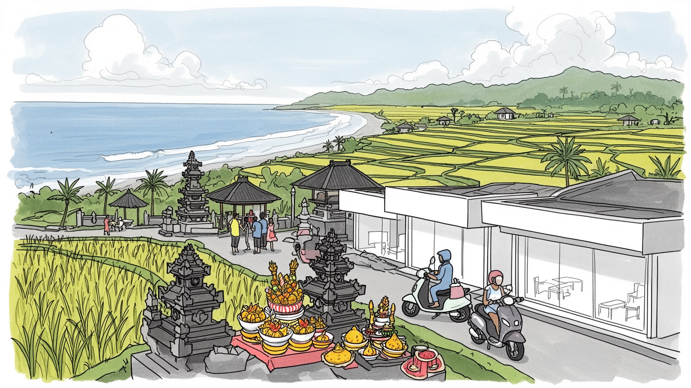
バリは小さな州ながら、空港、港、会議、観光投資を通じて世界と結びます。ジャワ、ロンボク、豪州、東アジアの人流が重なり、自治、国家政策、移住労働、メディアの視線が日常の移動にも影響します。政治が見えます。
宿泊、飲食、送迎、清掃、建設、工芸、農業、港湾が観光経済を支えます。リゾートの背後では、若者、女性、移住労働者、路上の売り手が季節変動、賃金差、住まいの遠さを調整しています。働く時間まで揺れます。
寺院、供物、火葬儀礼、舞踊、ガムランは観光資源以前に生活暦です。ニュピ、ガルンガン、クニンガンが街路と家族を動かし、子どもの稽古、高齢者の祈り、移住者の信仰も日常に重なります。島の暦も続いています。
寺院、棚田、海岸、カフェ、夜の観光地を巡れる一方、住民には水不足、渋滞、ごみ、住宅費、土地転用、観光依存が論点です。海風、線香、供物、バイク音も島の生活感を伝えます。買い物も日常です。市場もにぎわいます。
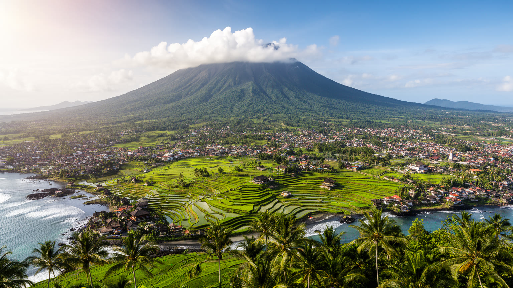
バリを都市として読む入口は、島全体が一つの生活圏として動いている点にあります。南部にはデンパサール、クタ、レギャン、スミニャック、サヌール、ジンバランが連なり、空港、ホテル、商店、大学、行政、住宅地が密に重なります。内陸のウブド周辺では、棚田、渓谷、寺院、芸能、工房が観光と日常の間に置かれ、北部や東部には港、魚市場、漁村、山麓集落が残ります。火山から海へ下る地形は水の流れを決め、灌漑、農地、道路、村の配置に影響します。島は小さく見えても、移動は交通渋滞、狭い道、観光車両、祭礼の通行止めに左右されます。バリの都市圏は高層ビルの集積ではなく、寺院、家屋、路地、宿泊施設、田畑、ビーチクラブ、空港が細かく接続する形で広がっています。南部の海岸で消費される水や食材は、内陸の田畑、港、道路、労働者の移動に支えられます。雨季の湿気、海風、線香の匂い、供物の花、バイク音が短い距離で混じることも、島の都市感覚を作ります。サーフポイントも海岸の使い方を変えています。島の都市化は中心から外へ広がるだけでなく、農村や寺院の時間を巻き込みながら、点と点を結ぶように進みます。そのためバリの地図は、都市と自然の境界を線で分けるより、移動、水、儀礼の流れとして読む方が実態に近くなります。海岸と山地の距離の短さも、島の個性です。
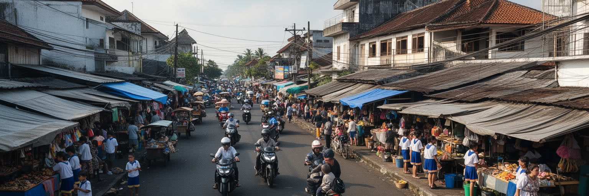
バリはインドネシア共和国の一州で、州都デンパサールが行政、教育、医療、商業の中心を担います。人口や面積ではジャワの大都市に及びませんが、国際観光、首脳会議、航空路線、文化外交、現地メディアや海外メディアの発信を通じて国家イメージに大きく関わります。ジャカルタの政策、観光投資、入国管理、空港拡張、災害対応は、島の日常に直接入り込みます。一方で、バリには村落共同体や慣習法の強い層があり、土地、祭礼、寺院、葬送、道路利用は行政制度だけでは説明できません。観光地として世界へ開かれるほど、土地売買、景観規制、宗教的空間の扱い、外部資本への依存が政治課題になります。空港の混雑、ビザ政策、外国人居住、環境規制は、住民の暮らしと国家の成長戦略がぶつかる場所です。島内では、州政府、県、市、村落組織、観光業者、宗教指導者、住民がそれぞれ違う優先順位を持ちます。道路を広げること、海岸を開発すること、寺院周辺の景観を守ることは、どれも利益と負担を生みます。バリの政治は遠い首都の制度だけでなく、日々の祭礼、土地の境界、水の利用、観光収入の配分に現れる身近な交渉でもあります。外国人の長期滞在や投資、島外からの移住労働を受け入れるほど、地域のルールを誰が説明し、誰が守らせるのかも重要になります。島の開放性は、自治の力と組み合わさって初めて安定します。
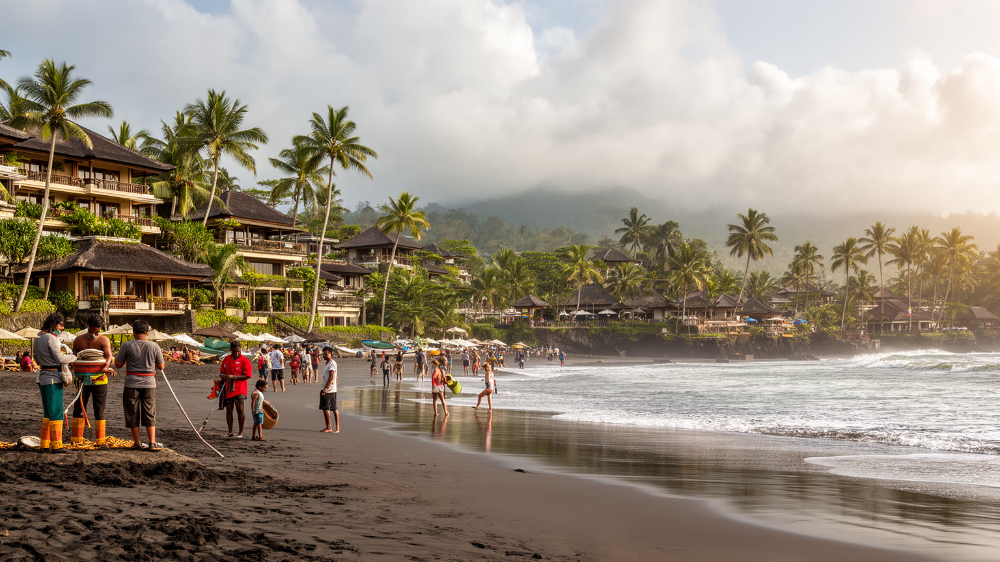
バリ経済の中心には観光があります。ホテル、ヴィラ、レストラン、スパ、送迎、ガイド、サーフスクール、工芸品店、ウェディング、イベント、写真撮影、語学サービスが、島の雇用を広く支えています。しかし観光の仕事は季節変動、為替、感染症、自然災害、国際情勢に弱く、収入が安定しにくい面があります。リゾートの快適さは、清掃、洗濯、調理、警備、庭園管理、建設、配送、空港、港湾、魚市場や農産物の供給に支えられます。若者は英語や接客を学び、家族経営の店は予約サイトや口コミに対応し、島外からの移住労働者も厨房、建設、送迎、物売りで働きます。観光が土地価格を上げるほど、働く人が職場近くに住みにくくなり、長い通勤や家賃の負担が増えます。バリを理解するには、海辺の余暇だけでなく、観光労働の現場、早朝の仕入れ、夜の片付け、交通整理、宗教行事と勤務時間の調整、ワルンの昼食、路上経済まで見る必要があります。観光の利益は島全体へ均等に広がるわけではありません。海岸に近い地区、英語教育を受けた人、資本を持つ家族は機会を得やすく、農村や小規模な店は価格競争に巻き込まれます。チップ、歩合、短期契約、家族労働も多く、働く人の安定は見えにくい指標です。観光産業の強さは、訪問者数だけでなく、繁忙期と閑散期を越えて生活を守れる仕事を作れるかで測られます。
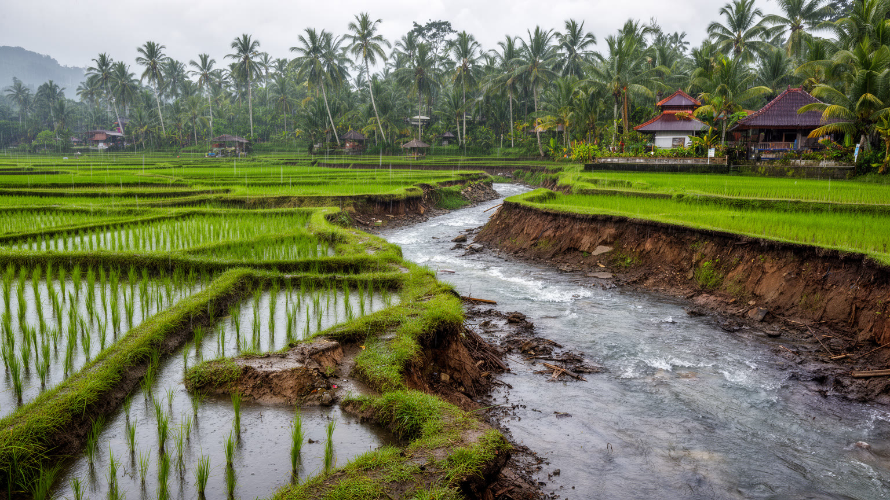
バリの景観を形作る棚田は、単なる美しい農村風景ではありません。水田を支えるスバックは、水を分け、作付けを調整し、寺院で祈り、共同作業を行う灌漑共同体です。山から流れる水は、川、用水路、田、村、寺院を通り、農業と信仰を結びます。観光客が棚田を眺めるとき、その背後には水の権利、労働、儀礼、土地相続、農産物価格の問題があります。観光開発で農地がヴィラやカフェへ変わると、景観は残っても農業の担い手や水の循環が弱くなることがあります。水田は食料生産だけでなく、洪水を和らげ、涼しさを保ち、島の文化的な時間を作ってきました。バリの都市化を考えるなら、農地を都市の外側にある過去として扱うのではなく、観光、環境、信仰、生活を支える現役のインフラとして見る必要があります。水を誰が使い、誰が守るのかが、島の未来を左右します。米作の収入だけでは若い世代を引き止めにくく、農家は民宿、カフェ、送迎、工芸などを組み合わせて暮らすこともあります。観光客が景観を求めるほど、農業を続ける人への対価をどう作るかが問われます。スバックは伝統として保存する対象であり、水不足と土地転用に向き合う現代的な調整制度でもあります。棚田を維持する作業は季節ごとに続き、草刈り、水路の修理、祭礼の準備を伴います。美しい景観は自然に残るのではなく、共同体の労働と水の合意によって毎年作り直されています。
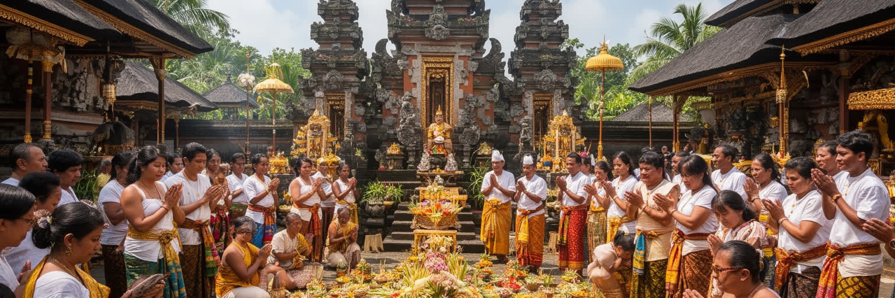
バリの日常は、寺院、家の祠、供物、儀礼と祝祭、火葬儀礼、舞踊、ガムランによって区切られます。バリ・ヒンドゥーの信仰は観光向けの演出以前に、家族、村、仕事、暦を動かす生活の制度です。Nyepiの静寂、GalunganとKuninganの準備、朝の供物、夕方の線香は、街路と家の時間を整えます。バンジャールと呼ばれる地域組織は、祭礼準備、葬儀、清掃、交通整理、相互扶助を担い、住民の顔の見える関係を保ちます。祭礼の日には道路が止まり、店の営業時間が変わり、観光客も島の時間に合わせることになります。信仰は島を閉じるものではなく、外から来る人と土地のルールを調整する基準にもなります。同時に、イスラム教徒やキリスト教徒、他地域からの移住者も働き、暮らしています。寺院で響くガムラン音、供物を運ぶ子ども、高齢者の祈りは、宗教が世代をつなぐ姿を示します。バリの文化を尊重するとは、写真を撮ることだけでなく、服装、進入できる場所、儀礼の時間、供物の意味、地域の負担を理解することです。共同体の助け合いは強さを持つ一方、負担が特定の世帯や女性、若者へ偏ることもあります。外部から来る事業者や旅行者も、そのリズムを理解して初めて地域に受け入れられます。儀礼は観光の演目ではなく、土地と人の関係を確かめる時間です。祈りは続いています。
バリの国際的な入口はングラ・ライ国際空港です。空港は南部観光地に近く、到着後すぐにリゾートへ向かえる便利さがありますが、その近さが道路渋滞と土地利用の圧力を強めます。港はジャワやロンボクとの物流、フェリー、人の移動を支え、食品、燃料、建材、日用品を島へ運びます。観光客には短い滞在の移動だけが見えますが、住民にとっては通勤、通学、病院、役所、祭礼、買い物の移動が重要です。鉄道がないため、道路、バイク、タクシー、配車サービス、観光バスに負担が集中し、狭い道や駐車場不足が生活の質を左右します。交通渋滞は単なる不便ではなく、救急、物流、労働時間、排気ガス、騒音、観光の満足度に関わります。朝の市場へ向かうバイク音、夜のクタやチャングーへ流れる車列、雨季の湿った空気も移動の記憶になります。空港と港は成長の扉であり、島の容量を測る場所でもあります。歩行者や自転車に優しい道が少ない地区では、短い距離でもバイクや車に頼ることになります。観光客の移動が増える時間帯には、学校や市場へ向かう住民の移動も重なります。公共交通の弱さは、低所得者、高齢者、学生、観光業の労働者に重くのしかかります。交通政策は観光の便利さだけでなく、島に住む人の時間を守る政策でもあります。道路の改善だけで需要を追い続けると、さらに車両が増える危険もあります。
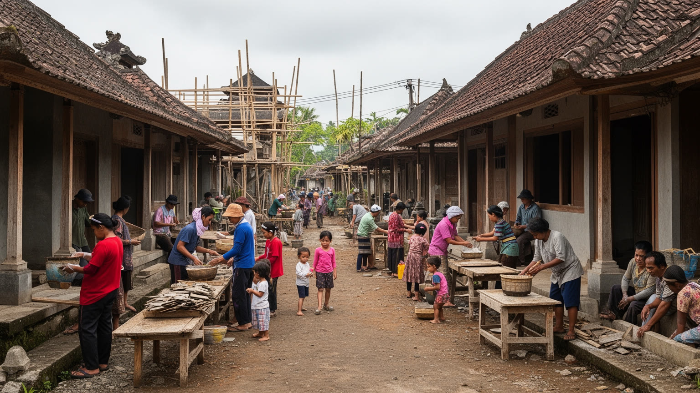
バリの暮らしは、海辺の別荘やリゾートだけでは見えません。家族の敷地、路地の商店、学校、診療所、市場、寺院、バイクの駐輪、洗濯、井戸や水道、ごみ収集が日常を作ります。朝はワルンでナシチャンプルを買い、昼には市場や小店で買い物を済ませ、休日には子どもがサッカーやバドミントンで遊び、高齢者が寺院や家の祠を整えます。観光開発が進む地区では、土地価格と家賃が上がり、長く住む人や若い世帯が住み続けにくくなることがあります。短期滞在者向けのヴィラやカフェが増えるほど、住民向けの店や静かな生活環境が変わります。水の需要はホテル、プール、ランドリー、農業、住宅で競合し、乾季には地域差が表れます。ごみ処理、下水、道路排水、海岸の漂着物も、観光地の印象だけでなく住民の健康に関わります。観光地に近い場所ほど仕事は多い一方、家賃や土地代も高く、家族の敷地を守ることが難しくなります。住民は親族の助け、村のつながり、副業、移動時間の調整で生活を組み立てます。インフラの問題は技術だけでは解けません。誰が費用を払い、誰の生活環境を優先するかという公平性の問題として扱う必要があります。観光で得た収入を、排水、学校、診療、住宅へ戻せるかが生活の質を左右します。島の豊かさは、日常の基盤へ再投資されて初めて住民のものになります。
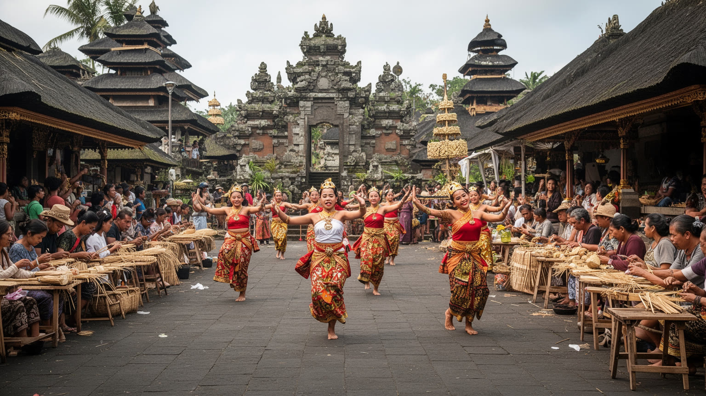
バリの文化は、舞台上の美しい舞踊だけでなく、村の稽古、ガムラン・舞踊教育、楽器づくり、仮面、織物、木彫、絵画、寺院装飾、学校教育の積み重ねで成り立っています。ガムランや舞踊は観光公演として知られますが、祭礼、家族行事、地域の誇りとも結びつきます。ウブド周辺の工房やギャラリーは外部の買い手を受け入れながら、地元の技術を更新してきました。観光市場に合わせて作品が変わることは、文化の衰退だけではなく、生計と継承のための適応でもあります。ただし、安価な土産物競争や土地価格の上昇は、若い作り手が時間をかけて学ぶ余裕を奪うことがあります。大学や専門学校、語学教育は、観光、医療、行政、デザイン、情報技術へ人材を送り出し、学生はカフェ、スタジオ、メディア発信、祭礼準備を行き来します。芸能は島の記憶であり、同時に現代の労働でもあります。観光客向けの短い上演と、寺院儀礼の長い演奏では、求められる意味も時間も違います。子どもが地域で稽古を続けるには、指導者、場所、楽器、家族の理解が必要です。休日の広場ではサッカーやバドミントンも学びの外側にあります。文化教育は収入を得る技術であり、島で生きる作法を学ぶ場でもあります。市場の需要に応えながら、地域の深い時間を失わないことが論点です。学びの場が地域に残るほど、文化は観光商品だけに縮みません。
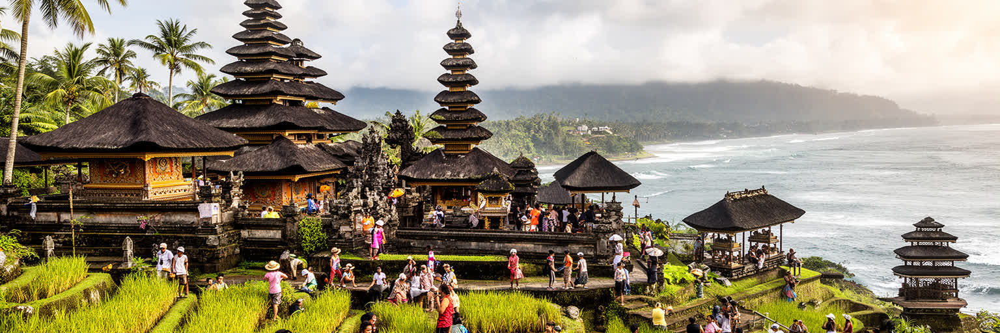
バリ観光の魅力は、寺院、棚田、火山、海岸、舞踊、食、スパ、サーフィンを短い距離で体験できることにあります。タナロットやウルワツのような海辺の寺院、ウブド周辺の芸能と工房、キンタマーニの火山景観、南部のビーチは、それぞれ違う時間の感覚を持ちます。夜のクタ、スミニャック、チャングーでは音楽、買い物、バー、屋台、配車の列が海風の中に連なります。しかし名所は住民の信仰と生活の場でもあり、写真を撮るためだけの背景ではありません。ワルンのナシチャンプル、バビグリン、サテ、魚市場の焼き魚は観光の味であり、働く人の昼食や家族の集まりを支えます。夜遅くまで街は動きます。観光客が増えるほど、交通、服装、騒音、入場管理、土地利用、価格の変化が地域に影響します。遺産を守るには、建物や景観を残すだけでなく、儀礼を行う人、農地を守る人、海岸を清掃する人、店を続ける人の生活を考える必要があります。近年は写真映えする場所や短時間の体験が人気を集め、移動の集中や過剰な演出も起きます。静かな村や寺院が突然観光動線に組み込まれると、住民の祈りや休息が乱されることがあります。観光の質を高めるには、料金の透明性、地域への還元、環境への配慮、訪問者への説明が欠かせません。名所を守ることは、そこに暮らす人の尊厳を守ることでもあります。
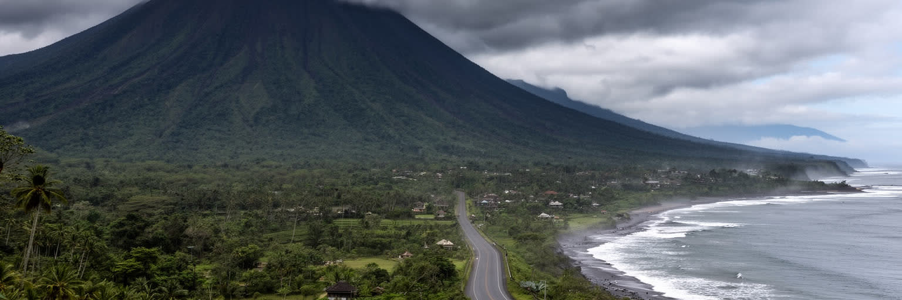
バリの気候は熱帯モンスーンで、乾季と雨季が生活と観光のリズムを作ります。雨季の強い雨は道路冠水、斜面崩れ、河川の増水、海岸へのごみの流出を起こし、乾季には水不足や暑さが表れます。海岸侵食、サンゴ礁への負荷、排水の不備、プラスチックごみは、観光地の美しさだけでなく漁業と健康にも関わります。さらに、アグン山やバトゥール山の火山活動は、避難、空港閉鎖、農地、信仰の場に影響します。災害は自然現象だけでは決まりません。どこに住宅やホテルを建てるか、排水をどう整えるか、避難情報をどの言語で出すか、観光客をどう誘導するかが被害を左右します。気候変動が進むほど、水、海岸、暑さへの備えは島の観光競争力そのものになります。バリの環境を読むことは、青い海や緑の棚田の美しさを眺めるだけでなく、それを支える水循環、廃棄物処理、地域の防災を読むことです。持続可能性は宣伝文句ではなく、暮らしの条件です。観光客は短期滞在の快適さを求めますが、住民は雨季も乾季も同じ場所で暮らし続けます。排水路、避難路、警報、医療、言語支援、ごみの分別が弱ければ、災害時の負担は地域へ偏ります。海岸の美しさを守るには、上流の排水、山麓の土地利用、宿泊施設の水利用まで含めて考える必要があります。環境対策は島全体の連携で初めて機能し続けます。
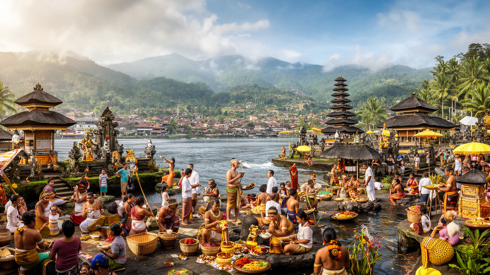
バリは、一般的な意味の大都市ではありません。それでも世界都市として読む価値があるのは、島の小さな空間に、信仰、観光、労働、農業、国際移動、環境リスクが濃く重なっているからです。デンパサールの行政と商業、南部の海岸観光、ウブドの芸能と工房、山麓の棚田、港と空港、寺院と村落組織は、別々の顔を持ちながら一つの都市圏を作ります。外から見るバリは癒やしや休暇の島として語られがちですが、内側には水を分ける制度、祭礼の労働、観光収入への依存、土地転用、ごみ処理、渋滞、若者の進路が存在します。バリを読むことは、観光地を消費することではなく、世界の欲望が一つの島の暮らしをどう変えるかを見ることです。寺院の静けさ、棚田の緑、海岸の夕景は、住民の日々の管理と負担によって保たれています。島の美しさを未来へ残すには、訪問者、行政、事業者、地域共同体が、その負担を公平に分ける必要があります。バリは小さいからこそ、世界都市の矛盾が見えやすい場所です。観光は雇用と誇りを生みますが、島の容量を超えれば水、道路、住宅、儀礼、自然へ負担を移します。これからの課題は、訪問者を増やすことだけではなく、住民が島で学び、働き、祈り、休み、次世代へ土地を渡せる条件を整えることです。バリの価値は消費される景色ではなく、生活と信仰が続く島の仕組みにあります。